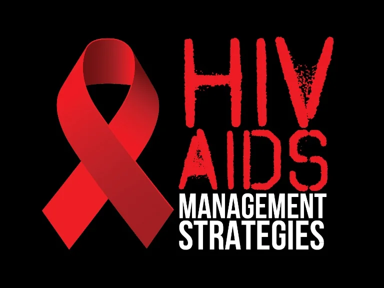
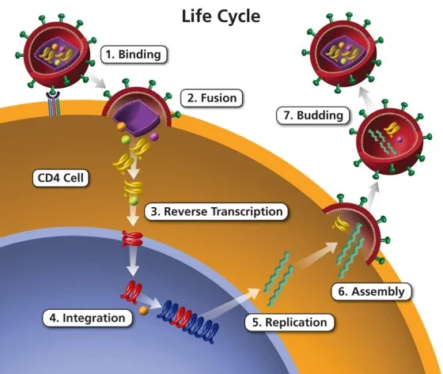
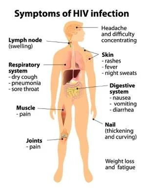
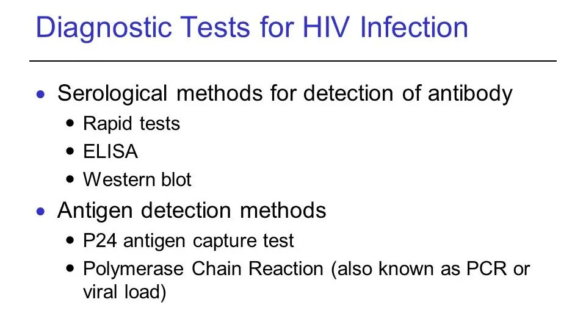
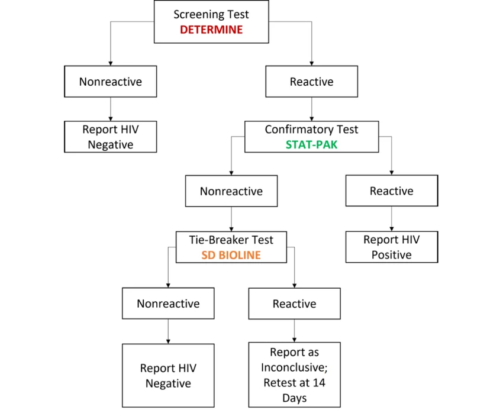

Expanded Nursing Uganda Explanation
Management of HIV/AIDs links cause, transmission, prevention, assessment and treatment support. Good nursing notes should include infection prevention, danger signs, adherence support and community health education.
Contents, 44 sections (tap to expand)
01 HIV/AIDS
HIV (Human Immunodeficiency Virus) is a virus that attacks the body’s immune system, specifically the CD4 cells (T cells), which are important for immune defence.
If untreated, HIV can lead to AIDS (Acquired Immunodeficiency Syndrome), a condition where the immune system is severely weakened .
HIV is a lenti-virus (slow and long acting) and belongs to the Retroviruses group . HIV invades the helper T cells to replicate itself thereby limiting the body’s ability to fight infection . HIV is the virus that causes AIDS, and it has no cure.
02 Types of HIV
- HIV-1 : This is the most common and widespread type of HIV, accounting for the vast majority of HIV infections globally. It is highly infectious and has several subtypes (or clades), labelled A through K. HIV-1 is the primary cause of the global HIV pandemic and is more aggressive in its progression to AIDS compared to HIV-2.
- HIV-2 : This type is less common and primarily found in West Africa. It is less transmissible and generally progresses more slowly to AIDS than HIV-1. There are fewer subtypes of HIV-2, labelled A through H.
03 Characteristics of HIV/AIDS.
- RNA Virus : HIV is an RNA virus that can convert its RNA into DNA using reverse transcription.
- Receptor Binding : The virus has specific proteins on its surface that bind to receptors on host cells, allowing entry.
- Heat Sensitivity : HIV is easily destroyed by high temperatures (around 600°F).
- Human Host: HIV can only survive and replicate in humans; it dies outside the human body and when the host dies.
- Immune Attack : The virus primarily targets and destroys white blood cells, especially CD4+ T cells.
- Rapid Replication : HIV replicates rapidly, producing billions of new virions each day.
- Disease Progression : HIV infection progresses through stages, eventually leading to AIDS if untreated.
- Latency : After initial infection, HIV can hide in cells and become dormant before reactivating later.
- Genetic Diversity : The virus has many subtypes and mutates quickly, making treatment and vaccine development challenging.
- Immune Evasion : HIV evades the immune system by mutating and hiding within cells.
- Transmission: HIV is transmitted through contact with infected bodily fluids, such as blood, semen, vaginal fluids, and breast milk.
- ART Treatment : Antiretroviral therapy (ART) can control HIV, preventing the progression to AIDS and allowing individuals to live longer, healthier lives.
04 Epidemiology.
According to the August 2017 Uganda Population-Based HIV Impact Assessment report, the prevalence of HIV among adults aged 15 to 64 in Uganda is 6.2%, with a higher rate among females (7.6% ) compared to males (4.7%) . This equates to approximately 1.2 million adults living with HIV in this age group. HIV prevalence is notably higher in women living in urban areas (9.8%) than in rural areas (6.7%) .
Among children aged 0-14 , the HIV prevalence is 0.5%, corresponding to about 95,000 children living with HIV. The viral load suppression (VLS) rate among HIV-positive adults is 59.6%, with higher rates in females (62.9%) than males (53.6%). For children aged 0-14, the VLS rate is 39.3%. HIV prevalence peaks at 14.0% among men aged 45 to 49 and 12.9% among women aged 35 to 39. There is a significant gender disparity among young adults, with HIV prevalence nearly four times higher in females than males aged 15 to 19 and 20 to 24. Additionally, HIV prevalence is almost three times higher in adults aged 20-24 compared to those aged 15-19 .
05 Modes of HIV Transmission
Sexual Contact :
- Unprotected Vaginal Sex : HIV can be transmitted through vaginal fluids and semen during unprotected vaginal intercourse..
Blood-to-Blood Contact :
- Sharing Needles: Using contaminated needles or syringes, common among intravenous drug users, can transmit HIV.
- Blood Transfusions: Although rare in countries with stringent blood screening, HIV can be transmitted through infected blood transfusions.
- Exposure to Contaminated Blood : Health care workers can be at risk through needle stick injuries or contact with open wounds.
Mother-to-Child Transmission :
- During Pregnancy: HIV can cross the placenta from mother to baby.
- During Childbirth : The baby can be exposed to HIV in the mother’s blood and vaginal fluids during delivery.
- Breastfeeding : HIV can be transmitted through breast milk from an infected mother to her child.
Other Modes :
- Contaminated Medical Equipment: Use of non-sterile instruments during medical or dental procedures can transmit HIV.
- Organ and Tissue Transplants : Transplantation of infected organs or tissues, though rare due to screening practices, can transmit HIV.
Less Common Modes :
- Tattooing and Piercing: If non-sterile needles are used, there is a risk of HIV transmission.
- Contact Sports: Although extremely rare, transmission can occur if both participants have open wounds.
06 Factors That Facilitate Mother-to-Child Transmission of HIV
Viral Load and Immune Status:
- High Viral Load : Higher levels of HIV in the mother’s blood increase the risk of transmission to the baby.
- Low CD4 Count: A weakened immune system due to low CD4 counts enhances transmission risk.
- Maternal Acquisition of HIV : New HIV infections during pregnancy or lactation significantly increase transmission risk.
Infections and Inflammation:
- Vaginal Infections : Infections such as bacterial vaginosis can elevate the risk of HIV transmission.
- Chorioamnionitis : Inflammation of the foetal membranes due to infection can facilitate HIV transmission.
Access to Antiretroviral Therapy (ART):
- Lack of ART: Mothers who do not receive ART are more likely to transmit HIV.
- Poor Adherence to ART: Inconsistent use of ART reduces its effectiveness in preventing transmission.
- Timing of ART Initiation : Starting ART late in pregnancy or not at all reduces its preventive benefits.
Socioeconomic Factors:
- Lack of Healthcare Access : Limited access to prenatal care and HIV testing can lead to missed opportunities for prevention.
- Education and Awareness : Lack of knowledge about HIV transmission and prevention strategies among pregnant women.
Nutritional Status:
- Poor Maternal Nutrition : Malnutrition can weaken the mother’s immune system, increasing the risk of transmission.
Delivery Method:
- Vaginal Delivery: Higher risk of transmission compared to elective caesarean section, especially if the mother has a high viral load.
- Prolonged/Difficult Labour : Increased exposure to maternal fluids during extended or complicated labour can raise the risk.
Prematurity :
- Premature Birth: Prematurity can increase the risk of transmission due to underdeveloped immune systems in infants.
Membrane Rupture:
- Prolonged Rupture of Membranes (PROM): Rupture lasting more than 4 hours before delivery increases the risk of HIV transmission.
Invasive Monitoring and Procedures:
- Use of invasive monitoring or procedures during labour can increase the risk of HIV transmission.
Breastfeeding Practices:
- Prolonged Breastfeeding : Longer duration of breastfeeding increases the risk of HIV transmission.
- Breast Health : Conditions like sore nipples, abscesses, or mastitis can increase the risk.
- Mixed Feeding: Combining breastfeeding with other foods or fluids increases transmission risk. Exclusive breastfeeding for the first 3-6 months does not show excess transmission compared to formula feeding alone.
Exclusive Breastfeeding:
- Exclusive breastfeeding means providing breast milk only, without additional fluids, water, food, teats, or pacifiers, and involves on-demand feeding.
Oral Health in Infants:
- Oral Thrush : Presence of oral thrush in breastfed infants can increase the risk of HIV transmission.
07 Phases of HIV Entry into Host Cells
- Binding : The HIV virus first attaches to the CD4 receptors on the surface of the host cell, typically a type of immune cell called a CD4+ T lymphocyte. HIV’s envelope protein, gp120, specifically binds to the CD4 receptor. This interaction triggers a conformational change in gp120 that allows it to also interact with a co-receptor, usually CCR5 or CXCR4, on the host cell surface. This dual receptor binding is essential for the virus to proceed to the next step.
- Fusion : After binding, the HIV viral envelope fuses with the host cell membrane, allowing the viral contents to enter the host cell. The conformational change in gp120 caused by CD4 and co-receptor binding exposes another viral protein, gp41. gp41 facilitates the merging of the viral envelope with the host cell membrane, creating a fusion pore through which the viral capsid containing the viral RNA and enzymes can enter the host cell cytoplasm.
- Reverse Transcription: Once inside the host cell, the viral RNA genome is reverse transcribed into DNA. The enzyme reverse transcriptase, carried within the viral capsid, converts the single-stranded viral RNA into double-stranded DNA. This process is error-prone, leading to a high mutation rate which contributes to the virus’s ability to evade the immune system and develop drug resistance.
- Integration : The newly synthesized viral DNA is integrated into the host cell’s genome. The viral DNA is transported into the host cell nucleus, where the enzyme integrase integrates it into the host cell’s DNA. This integrated viral DNA is known as a provirus and can remain dormant for a period before becoming active.
- Replication : Once integrated, the viral DNA can be transcribed and translated to produce new viral RNA and proteins. The host cell’s machinery reads the integrated viral DNA and begins to produce viral RNA. Some of this RNA will serve as genomes for new viral particles, while others will be used to produce viral proteins through the process of translation.
- Assembly : New viral particles are assembled within the host cell. The newly made viral RNA and proteins are transported to the host cell’s surface, where they assemble into new immature viral particles. This assembly process involves the gathering of viral components into a budding virion.
- Budding : The new viral particles bud off from the host cell, acquiring an envelope from the host cell membrane in the process. The immature viral particles bud off from the host cell, during which they incorporate a portion of the host cell’s membrane as their envelope. The viral enzyme protease then cleaves certain viral precursor proteins into their mature forms, resulting in a fully mature and infectious virus ready to infect other cells.
08 Clinical Manifestations of HIV/AIDS
The World Health Organization (WHO) has established a staging system to classify HIV infection and disease progression:
09 Clinical Stage I:
- Asymptomatic : No symptoms of HIV-related illness.
- Persistent Generalized Lymphadenopathy : Enlargement of lymph nodes lasting more than three months.
- Performance Scale 1: Asymptomatic with normal activity level.
10 Clinical Stage II:
- Moderate Weight Loss: Less than 10% of presumed or measured body weight lost.
- Minor Muco-cutaneous Manifestations: Skin conditions like seborrheic dermatitis, prurigo, or fungal nail infections.
- Herpes Zoster: History of shingles within the last five years.
- Recurrent Upper Respiratory Tract Infections : Such as bacterial sinusitis, tonsillitis, or otitis media.
- Performance Scale 2: Symptomatic but normal activity level.
11 Clinical Stage III:
- Severe Weight Loss : More than 10% of presumed or measured body weight lost.
- Unexplained Chronic Diarrhoea: Lasting more than one month.
- Unexplained Prolonged Fever: Constant or intermittent, lasting more than one month.
- Oral Candidiasis : Oral thrush, a fungal infection.
- Oral Hairy Leukoplakia : White patches on the tongue or mouth.
- Pulmonary Tuberculosis : Active TB infection.
- Severe Bacterial Infections : Such as pneumonia, pyomyositis, or bacteremia.
- Acute Necrotizing Ulcerative Gingivitis : Severe gum disease.
- Unexplained Anaemia, Neutropenia, or Thrombocytopenia: Abnormal blood counts.
- Performance Scale 3 : Bedridden for less than 50% of the day during the last month.
12 Clinical Stage IV:
- HIV Wasting Syndrome: Weight loss of more than 10% with chronic diarrhoea or prolonged fever.
- Pneumocystis Pneumonia (PCP) : A severe fungal lung infection.
- Toxoplasmosis of the Brain : Brain infection caused by the Toxoplasma parasite.
- Cryptosporidiosis : Parasitic infection causing prolonged diarrhea.
- Cytomegalovirus Infection : A viral infection affecting various organs.
- Progressive Multifocal Leukoencephalopathy (PML) : Brain infection causing neurological symptoms.
- Lymphoma : Cancer of the lymphatic system.
- Kaposi’s Sarcoma: Cancerous skin lesions caused by a herpesvirus.
- HIV Encephalopathy: Cognitive and/or motor dysfunction due to HIV infection.
- Atypical Disseminated Leishmaniasis : Parasitic infection affecting multiple organs.
- Symptomatic HIV-Associated Nephropathy or Cardiomyopathy : Kidney or heart disease associated with HIV.
- Performance Scale 4: Bedridden for more than 50% of the day during the last month.
13 Pre and Post-Counselling and Consent: Essential for all diagnostic procedures unless in specific circumstances:
- Testing of very sick, unconscious, symptomatic, or mentally ill individuals by healthcare teams for better patient management.
- Routine testing for individuals likely to pose a risk of HIV infection to others, such as pregnant and breastfeeding mothers, sexual offenders and survivors, and blood or organ donors. These individuals must still be given the opportunity to know their status.
14 Criteria for Diagnosis : Diagnosis based on:
- Clinical Staging Criteria.
- Positive HIV Blood Test: Confirmation of HIV infection through serological (antibody) testing.
15 Testing Protocol : Testing for Adults and Children >18 Months:
- Serological (Antibody) Testing: Most common method. Due to the window period between infection and antibody production, negative individuals should be re-tested after three months if exposed.
- Reactive Rapid Test: Requires confirmation before diagnosis.
16 Diagnostic Tests
Screening Tests:
- ELISA (Enzyme-Linked Immunosorbent Assay) AglAb Tests : Commonly used to screen blood donations to exclude those in the window period.
Molecular Tests:
- PCR (Polymerase Chain Reaction) Tests: Nucleic-Acid Amplification Testing (NAT) detects genetic material of HIV itself, not antibodies or antigens.
17 Considerations: Testing should consider:
- Clinical status, medical history, and risk factors of the individual being tested.
- Use of tests in conjunction with patient assessment for accurate diagnosis and appropriate care.
18 Immediate Connection to HIV Care
- If positive, immediate referral to HIV care services for management and treatment initiation.
19 HIV Testing Provision Protocol
Step 1: Pre-Test Information and Counseling
- Provide information on HIV transmission, prevention measures, and testing benefits.
- Discuss potential test results, available services, and ensure consent and confidentiality.
- Conduct individual risk assessment and complete necessary documentation.
Step 2: HIV Testing
Perform blood-based testing.
- For infants below 18 months: Use DNA PCR testing.
- For individuals above 18 months: Conduct antibody testing as per testing algorithms.
Step 3: Post-Test Counseling (Individual/Couple)
- Assess readiness to receive results and deliver them simply.
- Address concerns, provide guidance on disclosure, partner testing, and risk reduction.
- Offer information on basic HIV care, ART, and complete documentation.
Step 4: Linkage to Other Services
- Provide information on available services and assist in completing referral forms.
- Upon enrollment in services, record pre-ART enrollment numbers and transfer relevant information to ART registers.
Principles of HIV Testing Services (HTS)
- Confidentiality : Ensure privacy and confidentiality of test results.
- Consent : Obtain informed consent from individuals before testing.
- Counselling : Offer supportive counselling before and after testing.
- Correct Test Resul t: Ensure accuracy of test results through proper testing procedures.
- Connection to Other Services : Facilitate access to appropriate services for individuals testing positive.
20 Linkage from HIV Testing to Prevention, Care, and Treatment
Linkage is the process of connecting individuals who test positive for HIV to the necessary services.
Successful linkage to care ensures that patients receive the services they need. For HIV-positive clients, linkage should occur promptly, within seven days if within the same facility, and within 30 days for referrals between facilities or from the community. Lay providers are recommended as linkage facilitators.
- Internal Facility Linkage : Connecting patients within the same facility.
- Inter-Facility Linkage: Connecting patients to another facility.
- Community-Facility Linkage : Connecting clients from the community to a health facility.
Internal Facility Linkage Steps:
- Post-Test Counselling : Provide accurate results and information about available care.
- Next Steps Discussion : Describe the care and treatment process, emphasizing early treatment benefits.
- Address Barriers : Identify and overcome any obstacles to linkage.
- Involvement : Involve the patient and family in decision-making.
- Documentation : Complete client and referral forms.
- Escort to Clinic: A linkage facilitator escorts the client to the ART clinic.
- Enrollment : Register the patient, open an ART file, and provide preparatory counselling.
- Initiation : Start ART if ready, and continue with counselling support.
- Integrated Care : Coordinate other services if needed.
- Follow-Up : Ensure the patient attends appointments.
Inter-Facility and Community-Facility Linkages:
- Inter-Facility Linkage : Refers to connecting patients to another facility. The referring facility should track referred patients and ensure enrollment within 30 days.
- Community-Facility Linkage : Connects clients from the community to a health facility. Utilize community health systems and mobilize peer leaders for outreach and follow-up. Linkage should occur within 30 days after diagnosis.
21 Treatment Modalities of HIV/AIDS
- Treatment Modality Description
- Antiretroviral Therapy (ART) Suppresses viral load to undetectable levels, reducing morbidity, mortality, and transmission of HIV.
- Treatment of Acute Bacterial Infections Addresses immediate bacterial infections.
- Prophylaxis and Treatment of Opportunistic Infections Prevents and manages opportunistic infections.
- Maintenance of Good Nutrition Ensures adequate nutrition to support overall health.
- Immunization Administers vaccines to prevent opportunistic infections.
- Management of AIDS-Defining Illnesses Addresses specific illnesses associated with advanced HIV infection.
- Psychological Support for the Family Provides emotional support and guidance for affected families.
- Palliative Care for the Terminally Ill Offers comfort and support for patients nearing the end of life.
22 Antiretroviral Drug Treatment
Goal of ART: Suppress viral load to undetectable levels, reducing morbidity, mortality, and transmission of HIV.
When to Initiate ARV:
- All HIV-infected children below 12 months.
- Clinical AIDS
- Mild to moderate symptoms and immunosuppression.
Process of Starting ART:
- Assess for opportunistic infections, defer ART if TB or cryptococcal meningitis present.
- Offer ART on the same day through an opt-out approach.
- If not ready for same-day initiation, agree on a timely ART preparation plan.
23 Available ARVs in Uganda
- Drug Class Examples
- Nucleoside Reverse Transcriptase Inhibitors (NRTIs): Incorporate into the DNA of the virus, thereby stopping the building process. Tenofovir (TDF), Zidovudine (AZT), Lamivudine (3TC), Abacavir (ABC)
- Non-Nucleoside Reverse Transcriptase Inhibitors (NNRTIs): stop HIV production by binding directly onto the reverse transcriptase enzyme, and prevent the conversion of RNA to DNA. Efavirenz (EFV), Nevirapine (NVP), Etravirine (ETV)
- Integrase Inhibitors: interfere with the HIV DNA’s ability to insert itself into the host DNA and copy itself. Dolutegravir (DTG), Raltegravir (RAL)
- Protease Inhibitors (PIs) : prevent HIV from being successfully assembled and released from the infected CD4 cell. Atazanavir (ATV), Lopinavir (LPV), Darunavir (DRV)
- Entry Inhibitors : prevent the HIV virus particle from infecting the CD4 cell. Enfuvirtide (T-20), Maraviroc
24 Recommended First Line Regimens in Adults, Adolescents, Pregnant Women and Children
HIV management guidelines are constantly being updated according to evidence and public policy decisions. Always refer to the latest official guidelines.
25 The 2022 guidelines recommend DOLUTEGRAVIR (DTG) an integrase inhibitor as the anchor ARV in the preferred first and second-line treatment regimens for all HIV infected clients; children, adolescents, men, women (including pregnant women, breastfeeding women, adolescent girls and women of child bearing potential).
- Patient Category Preferred Regimens Alternative Regimens
- Adults and Adolescents
- Adults (including pregnant women, breastfeeding mothers, and adolescents ≥30Kg) TDF + 3TC + DTG – If DTG is contraindicated: TDF + 3TC + EFV400 – If TDF is contraindicated: TAF + FTC + DTG – If TDF or TAF is contraindicated: ABC + 3TC + DTG – If TDF or TAF and DTG are contraindicated: ABC + 3TC + EFV400 – If EFV and DTG are contraindicated: TDF + 3TC + ATV/r or ABC + 3TC + ATV/r
- Children
- Children ≥20Kg – <30Kg ABC + 3TC + DTG – If DTG is contraindicated: ABC + 3TC + LPV/r (tablets) – If ABC is contraindicated: TAF + FTC + DTG (for children >6 years and >25Kg) – If ABC and TAF are contraindicated: AZT + 3TC + DTG
- Children <20Kg ABC + 3TC + DTG – If intolerant or appropriate DTG formulations are not available: ABC + 3TC + LPV/r granules – If intolerant to LPV/r: ABC + 3TC + EFV (in children >3 years and >10Kg) – If ABC is contraindicated: AZT + 3TC + DTG or LPV/r
Notes:
- Contraindications for DTG include known diabetics, patients on anticonvulsants (carbamazepine, phenytoin, phenobarbital) – use the DTG screening tool prior to DTG initiation.
- Contraindications for TDF and TAF include renal disease and/or GFR <60ml/min, weight <30Kg.
- TAF can be used in subpopulations with bone density anomalies.
- Children will be assessed individually for their ability to correctly take the different formulations of LPV.
Notes from Ministry of Health(Uganda)
- For clients on an ABC-3TC-DTG based regimen weighing >25 kg, use the fixed-dose combination of Abacavir/Lamivudine/Dolutegravir 600/300/50 mg instead of the separate pills of Abacavir/Lamivudine 600/300 mg plus Dolutegravir 50 mg.
- Use Abacavir/Lamivudine 600/300 mg for patients on the following regimens: ABC-3TC-ATV/r, ABC-3TC-LPV/r, and ABC-3TC-DRV/r.
- Use the single pill of Dolutegravir 50 mg for patients on AZT-3TC-DTG based regimens.
- For eligible patients on ATV/r and LPV/r, optimize to Dolutegravir.
- For PrEP, while the guidelines provide options for the use of either TDF/3TC 300/300 mg or TDF/FTC 300/200 mg, use TDF/FTC 300/200 mg for PrEP in terms of programmatic implementation.
26 Monitoring of ARV Treatment
The monitoring of patients on antiretroviral therapy (ART) serves several purposes:
- Assess Response to ART and Diagnose Treatment Failure
- Ensure Safety of Medicines: Identify Side Effects and Toxicity
- Evaluate Adherence to ART
27 Methods of Monitoring ARV Treatment
- Clinical Monitoring : Involves medical history and physical examination.
- Laboratory Monitoring : Includes various laboratory tests.
- Viral Load Monitoring : Preferred for assessing response to ART and diagnosing treatment failure.
- CD4 Monitoring : Recommended in specific scenarios.
- Other Minor Laboratory Tests : Includes tests for specific indications.
28 Viral Load Monitoring
- Preferred method for monitoring ART response. A patient who has been on ART for more than 6 months and is responding to ART should have viral suppression (VL <1000 copies/ml) irrespective of the sample type (either DBS or plasma).
- Provides an early and more accurate indication of treatment failure and the need to switch from first line to second-line drugs, hence reducing the accumulation of drug resistance mutations and improving clinical outcomes.
- Early and accurate indication of treatment failure.
- Differentiates between treatment failure and non-adherence.
- Recommended frequency: Every six months for children and adolescents under 19 years.
29 CD4 Monitoring
- Baseline CD4 count is essential for assessing opportunistic infection risk.
- Recommended for patients with high viral load or advanced clinical disease.
30 Other Laboratory Tests
- Tests Indication
- CrAg Screen for cryptococcal infection
- Complete Blood Count (CBC) Assess anaemia risk
- TB Tests Suspected tuberculosis
- Serum Creatinine Assess kidney function
- ALT, AST Evaluate liver function
- Lipid Profile, Blood Glucose Assess metabolic health
31 Immune Reconstitution Inflammatory Syndrome (IRIS)
IRIS is a spectrum of clinical signs and symptoms linked to immune recovery triggered by ART. It occurs in 10–30% of individuals starting ART, usually within the first 4–8 weeks.
- Serious Forms : Most severe cases happen in patients co-infected with TB, Cryptococcus, Kaposi’s sarcoma, and herpes zoster.
- Risk Factors : Include low CD4+ cell count (<50 cells/mm3) at ART initiation and disseminated opportunistic infections.
- Management : Usually self-limiting; treat co-infections to reduce symptoms and reassure patients to maintain ART adherence.
32 Steps to Reduce IRIS Development
- Early HIV Diagnosis : Initiate ART before CD4 declines to below 200 cells/mm3.
- Optimal Management of Opportunistic Infections: Screen and treat infections before starting ART, especially TB and cryptococcus.
33 ARV Drug Toxicity
- Range of Toxicities: ARVs can cause mild to life-threatening side effects.
- Challenges : Differentiating between ARV toxicity and HIV complications can be complex.
- Management : Assess patients for side effects at every clinic visit and take appropriate actions based on severity.
34 Management of ARV Side Effects/Toxicities
- Category Action
- Severe, Life-threatening Reactions (e.g., SJS/TEN, severe hepatitis) – Discontinue all ARVs immediately. – Manage the medical event and substitute offending drug when stable.
- Severe Reactions (e.g., Hepatitis and Anemia) – Substitute offending drug without stopping ART.
- Moderate Reactions (e.g., Gynaecomastia, Lipodystrophy) – Substitute with a drug in the same class or different class with a different toxicity profile. – Do not discontinue ART; continue if feasible.
- Mild Reactions (e.g., Headache, Minor Rash, Nausea) – Do not discontinue or substitute ART. – Provide reassurance and support to mitigate adverse reactions. – Counseling about the events.
35 Adherence Preparation, Monitoring, and Support
Sustaining adherence to Antiretroviral Therapy (ART) is essential for achieving HIV viral suppression, reducing drug resistance, and improving overall health outcomes. Conversely, poor adherence is a significant contributor to treatment failure. Regular assessment and reinforcement of adherence by the clinical team are critical components of HIV care.
36 Adherence Preparation: Preparing people to start antiretroviral therapy (ART) is an important step to achieving ART success.
- Initiation Discussion : Healthcare providers should engage patients in detailed discussions regarding their readiness and willingness to commence ART. While healthcare providers should provide necessary information and guidance, the ultimate decision to initiate ART rests with the patient or caregiver.
- 5 As Principles for Chronic Care : The clinical team should employ the “5 As” principles: Assess, Advise, Agree, Assist, and Arrange, to offer pre-ART adherence counselling and psychosocial support.
Steps in Preparation for ART:
- Assess : Evaluate patients’ understanding of HIV, ARVs, and potential adherence barriers.
- Advise : Provide patients with relevant information to empower them to enrol in treatment.
- Agree on : Develop an adherence plan and identify family and community support systems.
- Assist : Help patients identify and address potential barriers to adherence.
- Arrange for : Schedule appointments for ARV prescription, follow-up counselling sessions, and involvement in psychosocial support groups.
- Barrier Adolescents Pregnant or Breastfeeding Women Adults Key Populations
- Psychosocial issues Peer pressure, perceived need to conform
- Inconsistent daily routine Yes
- Child abuse and neglect Yes
- Stigma and discrimination Yes Yes Yes Yes
- Left out of decisions/limited discussion opportunities Yes
- Limited treatment literacy or adherence counselling tools Yes
- Challenges during transition from paediatric to adolescent care Yes
- Pregnancy-related conditions (nausea/vomiting) Yes
- Suboptimal understanding of HIV, ART, eMTCT Yes
- Lack of partner disclosure/support Yes
- Non-disclosure Yes Yes
- Gender-based violence (GBV) Yes Yes
- Drug sharing Yes
- Service delivery barriers Yes
- Poor-quality clinical practices Yes
- Gaps in provider knowledge/training Yes
- Poor access to services Yes
- Social barriers (work schedules/job nature) Yes
- Forgetfulness Yes
- Lack of trust in providers/medicines Yes
- Lack of social support Yes
- Drug side effects Yes
- Pill burden Yes
- Inadequate information about ARVs Yes
- Alcohol and substance abuse Yes Yes Yes
- Provider attitude Yes
- High mobility Yes
- Lack of peer support Yes
- Lack of health worker knowledge about KPs Yes
- Viral Load Monitoring: Considered the gold standard for assessing adherence and treatment response. It should be conducted six months after initiating treatment and annually thereafter.
- Self-reporting: Rapid, inexpensive, and easily implemented, but may be subject to bias.
- Pill Counting: Limited by patients potentially discarding tablets before clinic visits, but can be enhanced when combined with self-reported adherence.
- Pharmacy Refill/Clinic Records : Provides reliable documentation of medication collection patterns and can indicate potential adherence challenges.
Adherence support interventions should be provided to people on ART through the following interventions.
- Peer counsellors : These include peer mothers in the eMTCT program, adolescent peers, expert clients and other peers as patients and caregivers usually relate better to peers.
- Mobile phone calls and text messages : These should be used with the patient or caregiver consent. The patient or caregiver should provide the appropriate phone numbers to avoid accidental disclosure when messages are sent to a wrong person.
- Reminder devices like calendars, pill boxes and diaries can be used by clients.
- Behavioural skills training and medication adherence training : These include module based interventions and those designed to improve life skills, attitudes, behavior and knowledge.
- Fixed-dose combinations and once-daily regimens: When available, health-care workers should prescribe fixed dose combinations because they reduce the pill burden. If once daily regimens are available and recommended they should be used.
- Use of treatment buddies: This is an individual identified by the client to take on the role of a treatment supporter. This person reminds/gives the client their medication whenever it is time and also reminds them of their refill dates.
- Peer-led dialogues: These include group discussions among clients. They could discuss the challenges they face and come up with possible solutions.
37 Uses of ART (Antiretroviral Therapy)
- Treatment of HIV/AIDS: ART is the primary treatment for managing HIV/AIDS, helping to control the viral load and maintain the health of the immune system.
- Prevention of Mother-to-Child Transmission (PMTCT): ART is crucial in preventing the transmission of HIV from an infected mother to her baby during pregnancy, childbirth, and breastfeeding.
- Post-Exposure Prophylaxis (PEP): ART is used as an emergency intervention for individuals who have been potentially exposed to HIV. It must be started within 72 hours of exposure to be effective.
- Pre-Exposure Prophylaxis (PrEP) : ART can be taken by HIV-negative individuals at high risk of infection to prevent acquiring HIV. This is particularly useful for people with HIV-positive partners, among others.
- Treatment and Support for Children : Ensuring children with HIV receive ART is essential for their growth, development, and long-term health. Adherence to the treatment regimen is crucial for its effectiveness.
- Reducing Viral Load to Undetectable Levels: ART helps reduce the viral load in the body to undetectable levels, significantly lowering the risk of HIV transmission and improving overall health.
- Improving Quality of Life : Effective ART can improve the quality of life for people living with HIV by reducing the incidence of opportunistic infections and other HIV-related complications.
- Increasing Life Expectancy : ART has been shown to increase the life expectancy of people living with HIV, allowing them to live longer, healthier lives.
- Preventing Sexual Transmission of HIV: By reducing the viral load to undetectable levels, ART can prevent the sexual transmission of HIV, a strategy known as “treatment as prevention” (TasP).
- Reducing HIV-Related Stigma and Discrimination: Successful ART can help reduce stigma and discrimination associated with HIV by enabling individuals to lead healthy, productive lives, thereby changing perceptions about the disease.
- Managing Co-Infections: ART can help in managing co-infections such as hepatitis B and C, tuberculosis, and other conditions that are common in people living with HIV.
38 HIV/AIDS Prevention
In Uganda, the HIV epidemic is driven by multiple behavioural, biomedical and structural factors. There is thus no single HIV prevention intervention that is sufficient to prevent all HIV transmissions.
39 Behavioral Change and Risk Reduction Interventions
Delaying sexual debut, reducing unsafe sex practices, discouraging cross-generational sex.
Types of Behavioural Change:
- Service Delivery: Ensuring designated focal persons, staff training, and outreach programs.
- Risk Assessment : Offering HIV testing, assessing sexual behavior, and providing Socio-Behavioral Change Communication (SBCC).
- Condom Promotion: Encouraging condom use, addressing misconceptions, and overcoming barriers.
40 Biomedical Prevention Interventions
Key Interventions:
- EMTCT : EMTCT programs aim to prevent the transmission of HIV from an HIV-positive mother to her child during pregnancy, labor, delivery, or breastfeeding.
- Safe Male Circumcision (SMC): Studies have shown that SMC can reduce the risk of heterosexual men acquiring HIV by approximately 60%. SMC also helps in reducing the risk of other sexually transmitted infections (STIs), such as human papillomavirus (HPV) and herpes simplex virus type 2 (HSV-2).
- ART : Reduces the amount of HIV in the blood to undetectable levels. People with an undetectable viral load have effectively no risk of transmitting HIV sexually.
- PEP : PEP involves taking antiretroviral medicines after potential exposure to HIV to prevent infection. Must be started within 72 hours after exposure, up to usually 28 days, such as occupational exposure (e.g., needlestick injury) or non-occupational exposure (e.g., unprotected sex, sexual assault).
- PrEP : PrEP is a daily medication taken by HIV-negative individuals to prevent HIV infection. Includes individuals with HIV-positive partners, people who inject drugs, and those with high-risk sexual behaviors. When taken consistently, PrEP reduces the risk of HIV infection from sexual contact by about 99% and from injection drug use by at least 74%.
- Blood transfusion safety: Ensuring that blood and blood products are safe from HIV and other infections.Testing blood donors for HIV and other bloodborne pathogens. Implementing strict protocols for the collection, testing, and transfusion of blood.
- STI screening and treatment : Regular screening and timely treatment of sexually transmitted infections (STIs) to prevent the spread of HIV. STIs can increase the susceptibility to and transmission of HIV. Encouraging routine health check-ups and screenings, particularly for high-risk populations. Providing prompt treatment for any detected STIs to reduce complications and transmission risk.
Post-exposure prophylaxis (PEP)
Click Here
41 Nursing Uganda Clinical Lens
Use Management of HIV/AIDs as a practical nursing topic, not only a memorized definition. Link cause, transmission, incubation, clinical features, treatment support and prevention.
- What to understand first: define management of hiv/aids, identify the normal or expected pattern, then explain what changes when the patient is unwell.
- Why it matters in care: the nurse must recognize risk early, explain findings clearly, document accurately and know when to escalate.
- How to revise it: connect each point to assessment, nursing diagnosis or care problem, intervention, rationale and evaluation.
42 Assessment Guide
- Temperature, pulse, respiratory status, hydration, pain, rash, wounds, stool, urine or sputum changes.
- Exposure history, travel, contacts, vaccination status and comorbidities.
- Specimen orders, isolation needs, antimicrobial history and danger signs.
43 Nursing Priorities, Rationales and Outcomes
- Use standard precautions and transmission-based precautions where needed.
- Support hydration, nutrition, medicines, monitoring and early referral for severe disease.
- Teach prevention, adherence, hygiene, safe water, vector control or contact tracing as relevant.
The rationale for these priorities is patient safety: nursing actions should prevent deterioration, reduce discomfort, support recovery and create clear evidence for the next caregiver.
- Expected outcome: Symptoms improve, complications are detected early, transmission risk is reduced and treatment is completed correctly.
44 Patient Teaching and Revision Check
- Explain management of hiv/aids in simple language the patient or caregiver can repeat back.
- Teach warning signs, medicine or follow-up instructions, hygiene or lifestyle points where relevant.
- For exams, prepare a short answer using: definition, causes or risk factors, signs, assessment, management, complications and prevention.
- For ward practice, document baseline findings, actions taken, patient response and the plan for review.
Illustrations and Diagrams (5)





Related Video Lectures
Watch nursing lecture videos on YouTube for this topic. Opens in a new tab.
Watch on YouTubeExternal link: YouTube may use its own cookies and terms. Nursing Uganda is not affiliated with YouTube.